Esta lección está en elaboración. Algunas capturas y explicaciones todavía corresponden a Brackets, el editor que utilicé durante el curso 2015/16, en vez de a Visual Studio Code, el editor que estoy utilizando durante el curso 2016/17.
Esta lección está en elaboración. Algunas capturas y explicaciones todavía corresponden a Brackets, el editor que utilicé durante el curso 2015/16, en vez de a Visual Studio Code, el editor que estoy utilizando durante el curso 2016/17.
 Esta lección está en elaboración. Algunas capturas y explicaciones todavía corresponden a Brackets, el editor que utilicé durante el curso 2015/16, en vez de a Visual Studio Code, el editor que estoy utilizando durante el curso 2016/17.
Esta lección está en elaboración. Algunas capturas y explicaciones todavía corresponden a Brackets, el editor que utilicé durante el curso 2015/16, en vez de a Visual Studio Code, el editor que estoy utilizando durante el curso 2016/17.
Independientemente del editor que vaya a realizar, se recomienda dedicar un directorio específico para guardar en él los ejercicios de este curso y las pruebas que usted realice.


Como se comenta en la lección Configuración recomendada para el curso Páginas web HTML y hojas de estilo CSS, si va a utilizar Visual Studio Code, debe abrir la carpeta HTMLCSS.


Para cerrar la pestaña que contiene la pantalla de Bienvenida, haga clic en el icono de cruz de la pestaña:


La mayoría de ejercicios consisten en obtener una página completamente formateada a partir del texto de la página sin etiquetas y las imágenes.
En la página de ejercicios se proporciona para cada ejercicio tres enlaces:
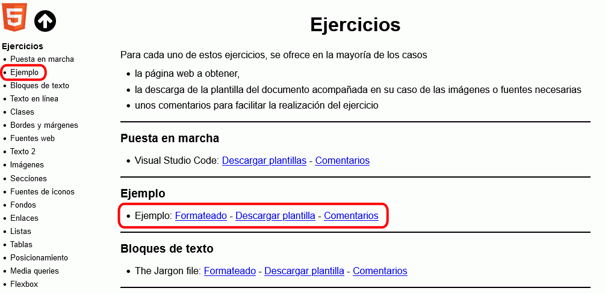
A partir de la página web sin formatear, el alumno debe:
Los pasos a realizar para realizar un ejercicio son los siguientes:
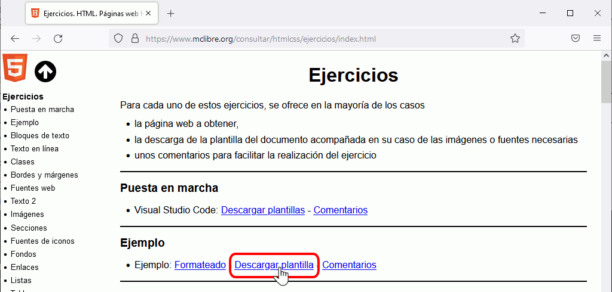
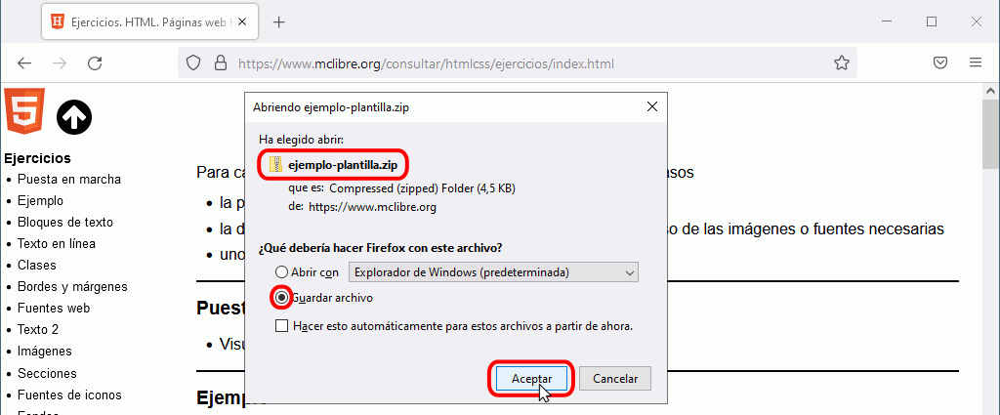
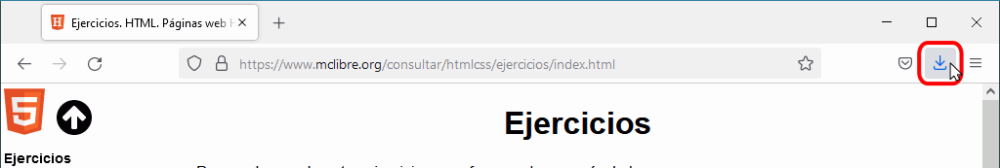
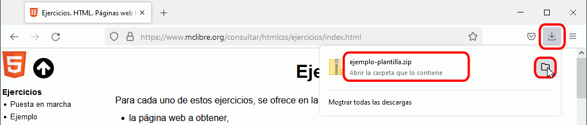
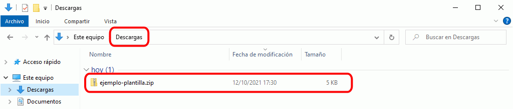
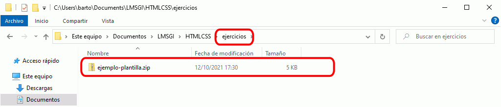
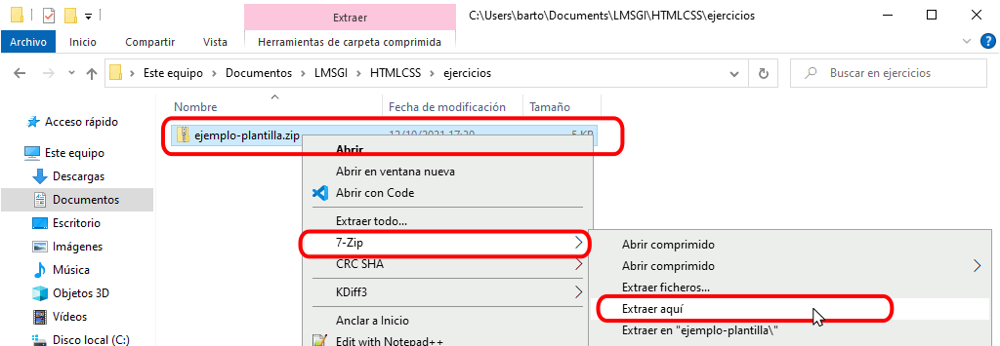
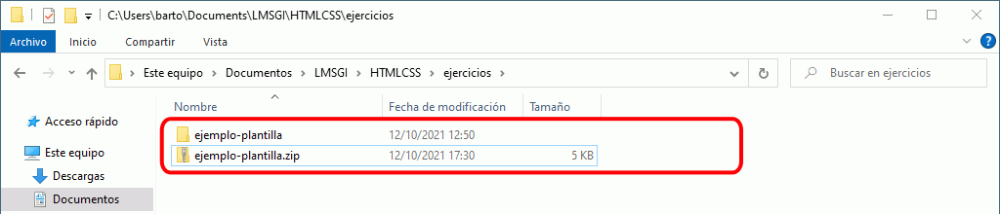
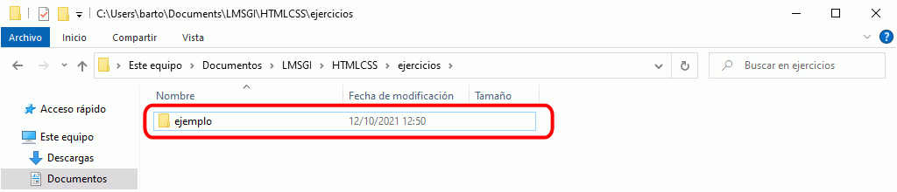
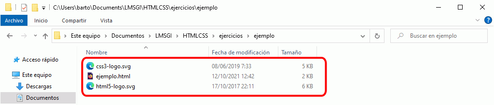
Las capturas siguientes corresponden al editor Visual Studio Code. En los apuntes de Informática general de mclibre.org puede encontrar las capturas correspondientes al editor Brackets.
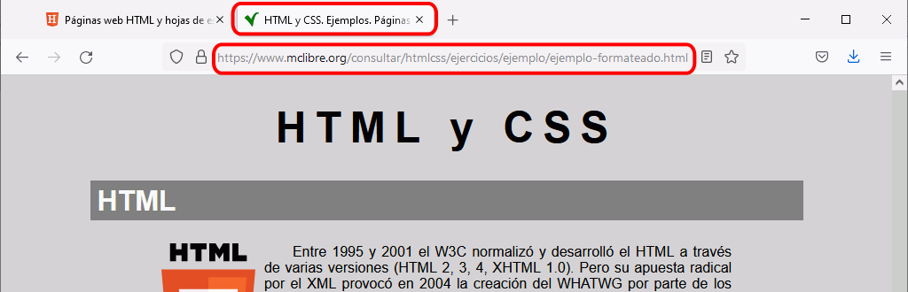
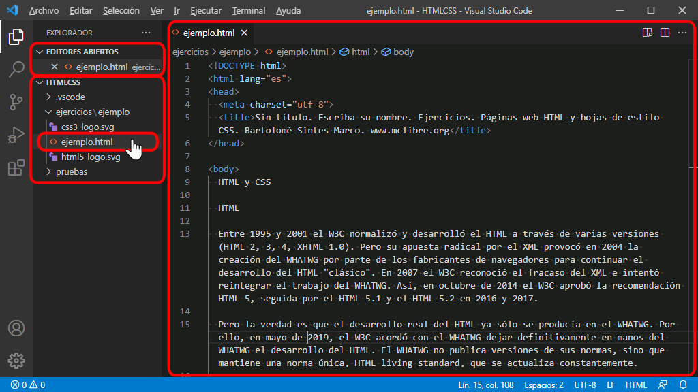
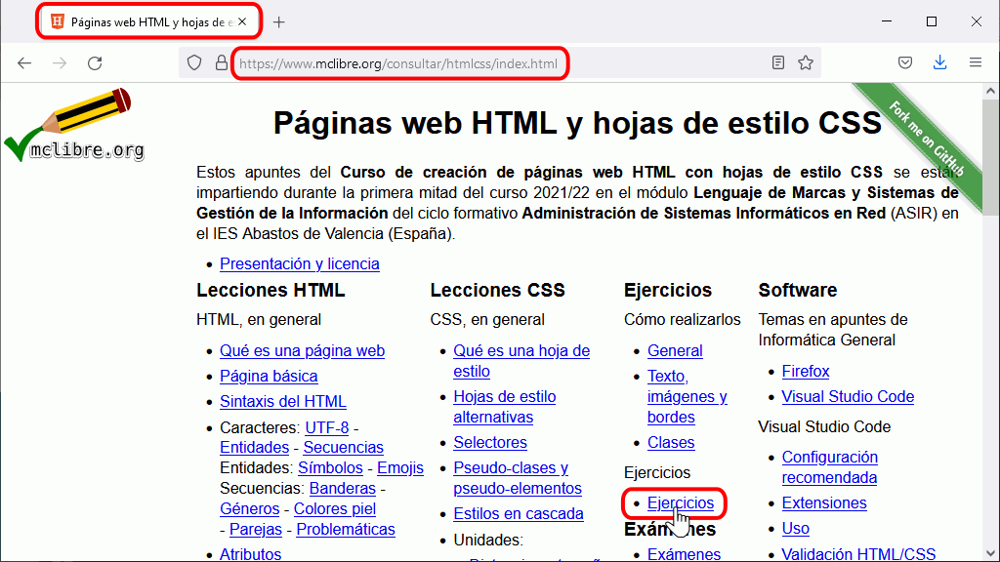
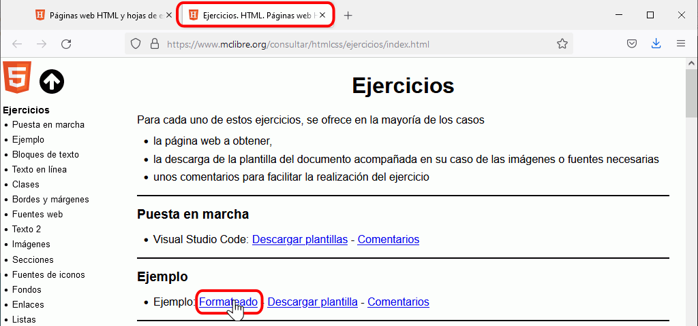
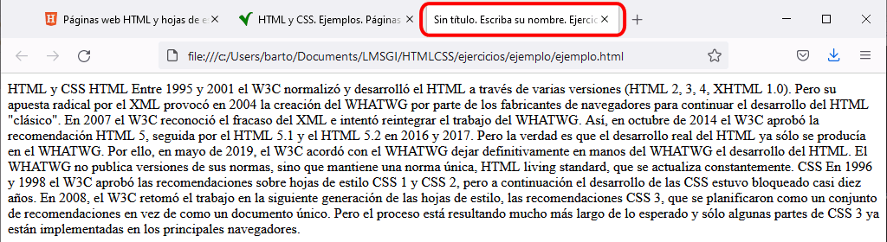
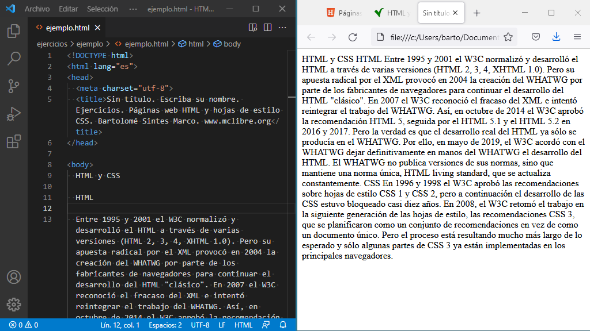
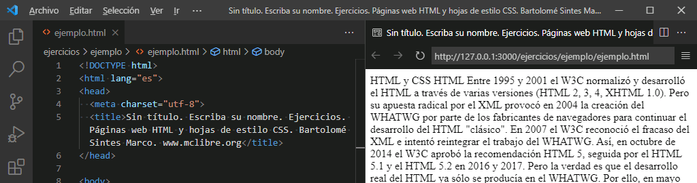
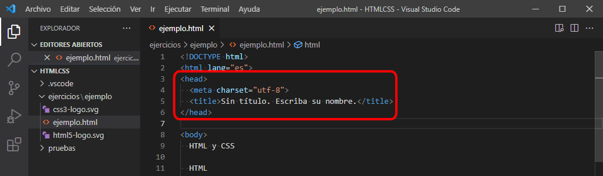
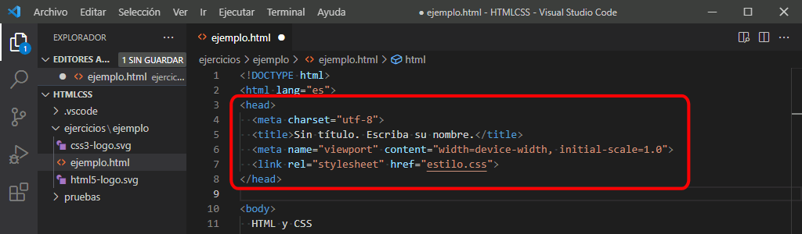
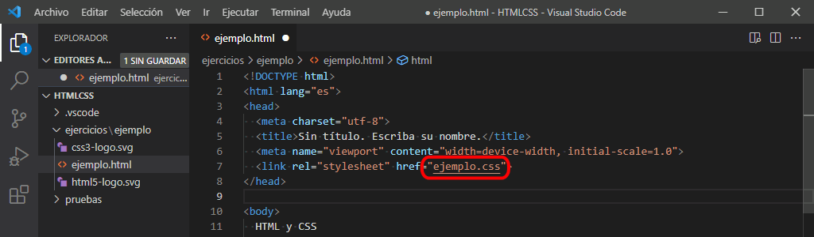
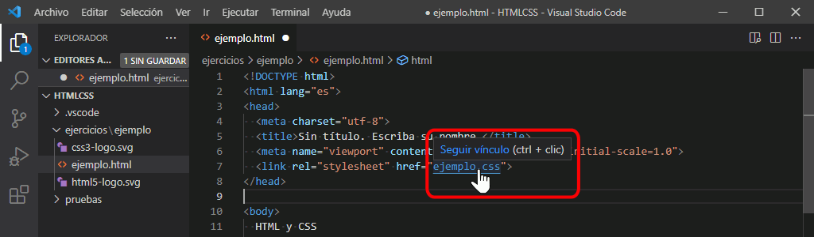
<link rel="stylesheet" type="text/css" href="ejemplo.css" title ="Color" />
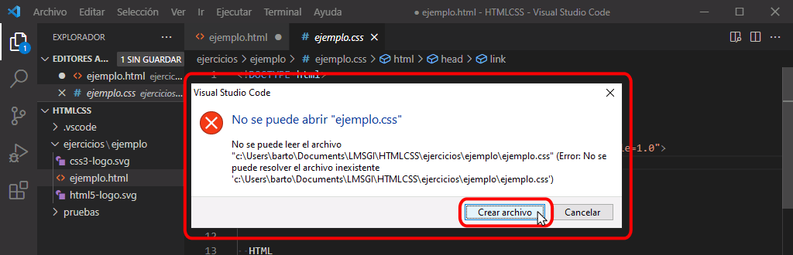

El objetivo de los ejercicios es obtener una página web lo más parecida posible al original. Eso incluye tanto el aspecto visual como las etiquetas utilizadas.
Algunas etiquetas pueden deducirse del aspecto de la página cuando se desactiva la hoja de estilo. Esas etiquetas deben emplearse.
Otras etiquetas pueden deducirse del aspecto de la página cuando se aplica la hoja de estilo. Esas etiquetas deben emplearse.
En algunos casos pueden utilizarse diferentes etiquetas y no se puede deducir cuáles a partir de la página (con o sin hoja de estilo). En esos casos, se puede utilizar cualquiera de ellas, aunque a veces unas se utilizan más que otras.
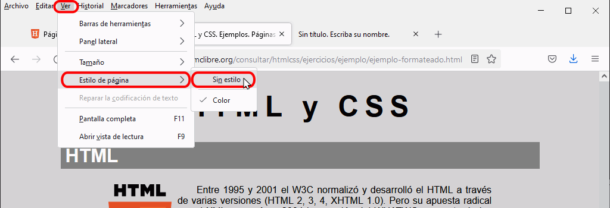
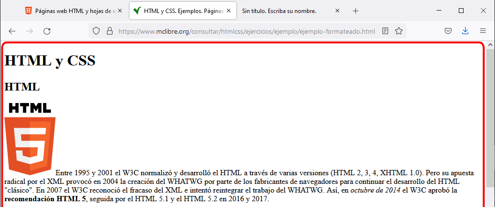
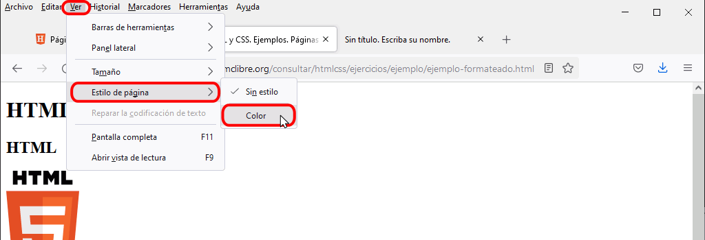
Para añadir las etiquetas en Brackets, se recomienda instalar la extensión Brackets Surround.
Se aconseja escribir la hoja de estilo siguiendo las recomendaciones que se comentan en la lección Guía de estilo de las hojas de estilo.
Las páginas web y las hojas de estilo no deben contener errores.
Para facilitar la identificación de errores, se recomienda instalar las extensiones W3CValidation y CSSLint de Brackets. Pero no basta con tener instaladas las extensiones; es necesario fijarse a menudo en el icono de notificación de errores de estas extensiones mientras se están editando la página web o la hoja de estilo.
La "solución" de cada ejercicio es el propio código fuente HTML y CSS de la página web y de su hoja de estilo.
Para ver el código fuente de una página, haga clic derecho sobre el texto de la página (no sobre las imágenes) y elija la opción "Ver código fuente de la página" o utilice el atajo de teclado Ctrl+U.

Se abrirá una pestaña mostrando el código fuente de la página formateada (es decir, la mitad de la "solución" del ejercicio). Para ver la hoja de estilo, haga clic en el enlace a la hoja de estilo.

En la misma pestaña se mostrará la hoja de estilo (es decir, la otra mitad de la "solución" del ejercicio).

Nota: En el examen, el alumno tan sólo dispondrá de capturas de pantalla, no dispondrá de página de comentarios ni podrá acceder al código fuente.
Si no es capaz de resolverlo, consulte la página de comentarios que le dará pistas sobre las etiquetas y propiedades de estilo utilizadas.
Si aún así no es capaz de resolverlo, consulte el código fuente de la página formateada.
En el examen, se admitirán como válidas pequeñas diferencias entre las páginas de muestra y la del alumno en lo que respecta a tamaños, distancias o colores.
En el examen, cuando un mismo resultado se pueda conseguir de varias maneras, normalmente se admitirán como válidas todas ellas.